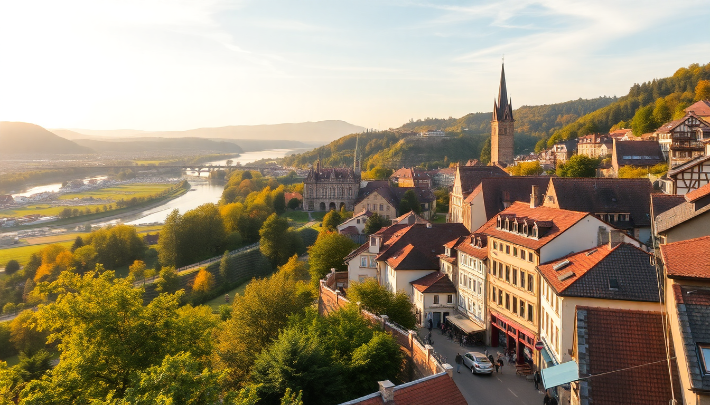

Best Day Trips from Frankfurt: Rhine Valley, Heidelberg & Rothenburg

I’ve done all three of these day trips from Frankfurt more times than I can count—often dragging jet-lagged friends along. Each one works perfectly as a single-day out-and-back, but they’re very different beasts. Here’s what actually works, what doesn’t, and where you should spend your limited time.
Why take day trips from Frankfurt instead of staying in the city?
Frankfurt’s central train station (Frankfurt Hauptbahnhof) is a spiderweb of regional and high-speed rail. You can be in a medieval town or a vineyard-covered valley in under two hours. The city itself is fine for a night, but its skyline and business-center vibe don’t compare to what’s an hour away. I usually base myself at Hotel Hamburger Hof right across from the station—it’s nothing fancy, but the location saves 15 minutes each morning.
What’s the best way to visit the Rhine Valley in one day?
The Rhine Valley between Rüdesheim and Koblenz is a UNESCO site for good reason: steep vineyards, hilltop castles, and riverside towns that look like a theme-park version of Germany. But don’t try to see the whole valley in a day. Focus on a 20-kilometer stretch.
Take the RE 9 regional train from Frankfurt Hbf to Rüdesheim (about 1 hour). From there, hop on the KD Line ferry to cross the river. I skip the tourist-trap Drosselgasse in Rüdesheim itself and head straight for Bacharach on the opposite bank. Bacharach’s Altstadt is compact, quiet, and has a half-ruined castle you can hike up to in 20 minutes. Eat at Altes Haus—a half-timbered restaurant that’s been serving schnitzel since the 1700s.
If you want a castle interior, stop at Burg Rheinfels in St. Goar. It’s the largest castle ruin on the river, and you can climb the tower for a view that justifies the €5 entry. The train back to Frankfurt runs hourly until late evening.
- Start: RE 9 from Frankfurt Hbf to Rüdesheim (€12 one-way with regional ticket)
- Boat: KD Line ferry from Rüdesheim to Bacharach (€8, runs hourly)
- Lunch: Altes Haus in Bacharach—order the Rheinischer Sauerbraten
- Castle: Burg Rheinfels in St. Goar (€5 entry, open 9am–6pm)
- Return: RE 9 from St. Goar direct to Frankfurt (55 minutes)
Is Heidelberg worth the hype, or is it overrun with tourists?
Heidelberg is beautiful, yes, but it’s also the most crowded day trip on this list. The Altstadt (old town) gets packed with tour groups by 11am, especially around the Heidelberg Castle and the Alte Brücke (Old Bridge). I still go, but I adjust my timing.
Leave Frankfurt on the ICE high-speed train from Frankfurt Hbf—it takes just 40 minutes. Arrive before 9am. Walk straight up to the castle before the crowds hit. The Großes Fass (giant wine barrel) inside is silly but worth a laugh. Skip the overpriced castle restaurant and hike down the Philosophenweg (Philosopher’s Walk) on the north bank of the Neckar River. It gives you the classic postcard view of the castle without fighting selfie sticks.
For lunch, avoid the main square. Walk five minutes to Schnitzelbank on Bauamtsgasse—a tiny spot where locals eat Maultaschen (Swabian dumplings) for €9. Afternoon is for wandering the Hauptstraße pedestrian zone, but I usually catch the 3pm ICE back to Frankfurt to avoid the 5pm crush.
- Train: ICE from Frankfurt Hbf to Heidelberg Hbf (40 minutes, €25 each way)
- Castle: Heidelberg Castle (€9 entry, includes funicular ride up)
- Viewpoint: Philosophenweg (free, 30-minute walk from Altstadt)
- Lunch: Schnitzelbank (€9–12 mains, cash only)
- Avoid: The Heidelberg Card—it rarely pays off for a single day
Can you really do Rothenburg ob der Tauber as a day trip from Frankfurt?
Yes, but it’s a long day. Rothenburg is 2.5 hours each way by train, with a transfer in Würzburg. I’ve done it three times, and it’s worth the travel time exactly once. The town is a perfectly preserved medieval walled city, but it’s also a tourist machine. You’ll see the same shops selling Schneeballen (fried dough balls) on every corner.
The key is to arrive by 10am and leave by 4pm. Walk the city walls first—you can do a full circuit in about 45 minutes. Then hit the Rathaus (town hall) tower for a 360° view. Skip the Kriminalmuseum (Medieval Crime Museum) unless you’re really into iron maidens—it’s more gimmick than substance.
For lunch, Zur Höll on Burggasse is the real deal. It’s a 500-year-old wine tavern with Fränkischer Braten (Franconian roast pork) and local Silvaner wine. Reservations aren’t accepted, so go at 11:45 or wait. The train back to Frankfurt via Würzburg leaves at 16:47—don’t miss it, or you’ll be stuck until 19:30.
- Train: RE from Frankfurt Hbf to Würzburg (1 hour), then RE to Rothenburg (1.5 hours)
- Wall walk: Start at the Galgentor gate (free, open dawn to dusk)
- Tower: Rathaus tower climb (€3, 200 steps)
- Lunch: Zur Höll (€12–16, cash only)
- Return: Catch the 16:47 RE from Rothenburg to Würzburg
When is the best season for these day trips?
May through September is ideal. The Rhine Valley ferries run more frequently, Heidelberg’s Philosophenweg is green, and Rothenburg’s walls aren’t icy. October works too, but the sun sets by 6pm, so you lose evening light. December has Christmas markets in all three towns, but the crowds in Heidelberg and Rothenburg are suffocating. I’d skip January through March unless you like cold rain and closed ferries.
FAQ
How much does a day trip from Frankfurt typically cost? Regional trains (RE/ICE) run €20–50 round trip depending on distance. Add €10–15 for food, €5–10 for castle or museum entry. Total: about €40–70 per person per day. The Deutschlandticket (€49/month) covers all regional trains in Germany—if you’re doing three or more day trips, it pays for itself.
Which day trip is best for families with kids? Rhine Valley, specifically the stretch from Rüdesheim to Bacharach. Kids love the ferry ride, the castle ruins are more interactive than Heidelberg’s manicured palace, and the train rides are short enough to avoid meltdowns. Rothenburg’s walls are fun for older kids but boring for toddlers.
Can I combine two destinations in one day? Technically yes, but I wouldn’t. Heidelberg plus Rothenburg would mean 5+ hours of train time and rushed visits. The Rhine Valley plus a quick Heidelberg stop works if you start at 7am, but you’ll miss the best parts of both. Pick one and go deep.
Conclusion
- Rhine Valley is the most relaxed day trip—trains, boats, and castle ruins without the crowds. Best for a slow, scenic day.
- Heidelberg is the easiest logistically (40-minute ICE) but gets packed by noon. Go early, skip the main square, and hike the Philosophenweg.
- Rothenburg ob der Tauber is the most picturesque but requires a 5-hour round trip. Do it once, but don’t feel guilty skipping it if you’re short on time.
- Buy a Deutschlandticket if you’re doing multiple trips. Pack a rain jacket. And for the love of God, avoid the Schneeballen in Rothenburg—they taste like stale pie crust.